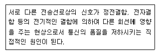
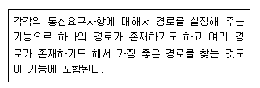
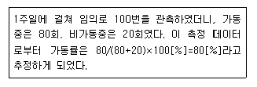

통신설비기능장 (2013-10-12 기출문제)
1과목: 임의 과목 구분(20문항)
1. 다음 중 시분할 통화 방식의 교환기에 대한 설명으로 알맞지 않은 것은?
- 교환기의 통화로 스위치에 PCM 시분할 방식을 사용한다.
- 스위치 네트워크는 T(Time) 스위치와 S(Space) 스위치의 적정한 조합 형태로 구성되어 있다.
- S-T-S형은 트래픽 특성이 우수하고 통화로 증설이 용이하다.
- T-S-T형은 통화로망의 사용 효율이 높고, 설계가 용이한 링크 정합방법을 구성할 수 있다.
(정답률: 81%)

2. 교환기가 10개인 망형(Mesh Type) 네트워크를 구성하는 경우 연결되는 회선의 총수는 얼마인가? (단, 링크당 중복 없음)
- 40회선
- 45회선
- 50회선
- 55회선
(정답률: 88%)
3. 디지털 교환기의 가입자 정합장치의 기본 기능은 무엇인가?
- 가입자선 상태 감시 (Supervision)
- 프레임 식별 (Hunt during Reframe)
- 프레임 정렬 (Alignment of Frame)
- 클럭 복구 (Clock Recovery)
(정답률: 91%)
4. 가입자 선로 폐쇄(Line Lock Out)란 무엇인가?
- 무위한 점유를 방지하는 기능
- 전자교환기의 중요한 기능
- 서비스를 균등히 하는 기능
- 대표번호를 부여하는 기능
(정답률: 95%)
5. 다음 중 양자화 방식에 해당되지 않는 것은?
- 선형 양자화
- 비선형 양자화
- 적응형 양자화
- 쌍곡선 양자화
(정답률: 90%)
6. 다음은 전자교환방식의 통화로계 장치에 대한 구성요소이다. 통화로에 접속하는데 직접적으로 관련이 없는 장치는?
- 통화로 장치
- 통화로 제어장치
- 라인 메모리 장치
- 주사 장치
(정답률: 84%)
7. 다음 중 시분할 방식을 사용하는 전자교환기는?
- AXE-10 ESS
- M10CN ESS
- No.1A ESS
- X-bar 교환기
(정답률: 80%)
8. 전송설비 중 송신단국장치의 기능을 순서대로 맞게 배열한 것은?
- 정보 → 전기 신호 변환 → 다중화 → A/D변환 → 전송부호화 → 변조 → 전기신호 → 광/전자파변환
- 다중화 → A/D변환 → 정보 → 전기신호 변환 → 전송부호화 → 변조 → 전기신호 → 광/전자파 변환
- 전기신호 → 광/전자파 변환 → 다중화 → A/D변환 → 전송부호화 → 변조 → 정보 → 전기신호 변환
- 정보 → 전기신호 변환 → A/D변환 → 변조 → 다중화 → 전송부호화 → 전기신호 → 광/전자파 변환
(정답률: 65%)
9. 통신망설비의 장애에 관한 파라미터로서 다음 설명에 해당되는 것은 무엇인가?

- 유도잡음전압
- 누화
- 절연저항
- 감쇄
(정답률: 88%)
10. 다음에 설명하는 네트워크기능 요소로 알맞은 것은?

- 교환 기능
- 라우팅 기능
- 흐름제어 기능
- 트래픽감시 기능
(정답률: 94%)
11. 증폭회로에서 중화회로를 사용하는 가장 큰 목적은?
- 전압이득을 증대시킨다.
- 기생진동을 방지한다.
- 자기발진을 방지한다.
- 잡음을 감소시킨다.
(정답률: 66%)
12. 다음 중 이동위성통신에 사용되는 주파수 대역과 거리가 먼 것은?
- L 밴드
- S 밴드
- UHF 밴드
- K 밴드
(정답률: 79%)
13. AM변조에서 반송파 신호가 20[W]이고 변조도가 50[%]일 때 변조신호는 얼마인가?
- 20.5[W]
- 22.5[W]
- 24.5[W]
- 26.5[W]
(정답률: 73%)
14. 다음 중 실효 선택도에 속하지 않는 것은?
- 혼변조
- 상호변조
- 감도억압효과
- 스퓨리어스레스폰스
(정답률: 75%)
15. UHF 주파수 대역의 파장 범위는?
- 10 ~ 100[m]
- 1 ~ 10[m]
- 0.1 ~ 1[m]
- 1 ~ 10[cm]
(정답률: 74%)
16. 다음 중 페이딩을 방지하기 위한 다이버시티가 아닌 것은?
- 공간 다이버시티
- 산란 다이버시티
- 주파수 다이버시티
- 편파 다이버시티
(정답률: 77%)
17. 이동통신에서 이용자가 가입ㆍ등록되어 있는 사업자의 시스템 이외의 시스템에서도 정상적인 서비스를 제공하는 기술을 무엇이라 하는가?
- 핸드오버(Hand Over)
- 로밍(Roaming)
- 위치 등록
- 호 처리
(정답률: 93%)
18. 다음 중 위성의 상태, 거리, 위치 등의 데이터를 위성제어센터에 전달하고, 위성제어센터의 명령신호를 받아 위성에 보내주는 역할을 수행하는 것은?
- 원격상태 추적명령(TT&C) 시스템
- 통신망 제어센터(NCC)
- 궤도내 시험(IOT) 시스템
- 위성 버스(BUS)
(정답률: 86%)
19. 수신기에서 수신주파수를 중간주파수로 변환하는 가장 큰 이유는?
- 혼신을 적게 하기 위해
- AFC를 깊게 하기 위해
- 스퓨어리스발사를 적게 하기 위해
- 선택도를 향상시키기 위해
(정답률: 85%)
20. 다음 중 자유공간에서 전파의 진행 속도는?
- 3×1012[m/s]
- 3×1010[m/s]
- 3×108[m/s]
- 3×106[m/s]
(정답률: 89%)
2과목: 임의 과목 구분(20문항)
21. 다음 중 마이크로파 안테나로 적합하지 못한 것은?
- 파라볼라 안테나
- 웨이브 안테나
- 혼 반사기 안테나
- 렌즈 안테나
(정답률: 58%)
22. 전송매체나 경로의 변화로 인해 수신신호의 세기가 시간에 따라 변하는 현상을 무엇이라 하는가?
- 페이딩
- 회절
- 굴절
- 감도
(정답률: 87%)
23. 네트워크의 내부와 외부 사이에 위치하여 방화벽 및 네트워크 캐시 역할을 수행하는 서버는 무엇인가?
- Proxy 서버
- Web 서버
- 운 서버
- Telnet 서버
(정답률: 87%)
24. 다음 중 백색잡음(White Noise)에 대한 설명으로 알맞지 않은 것은?
- 백색잡음은 신호에 더해지는 형태이다.
- 레일리 분포(Rayleigh Distribution) 특성을 갖는다.
- 열 잡음(Thermal Noise)이 대표적인 예이다.
- 주파수 전 대역에 걸쳐 전력스펙트럼 밀도가 거의 일정하다.
(정답률: 65%)
25. 다음 중 데이터 전송제어에 관한 설명으로 알맞지 않은 것은?
- OSI 참조모델 네트워크 계층에서 수행하는 기능을 전송제어라 한다.
- 전송제어란 입출력제어, 회선제어, 동기제어, 에러제어를 총칭한다.
- SDLC와 HDLC는 전송제어 방식 중 비트방식 프로토콜에 해당된다.
- 에러제어란 전송도중 손실되는 데이터를 검출하여 재전송하거나 정정하는 제어를 말한다.
(정답률: 70%)
26. 다음 중 IPTV의 설명으로 알맞지 않은 것은?
- 사업주체가 기간통신사업자이다.
- 서비스는 지역단위로 이루어진다.
- 디지털 양방향 서비스가 가능하다.
- IP기반의 통신망을 통해 제공된다.
(정답률: 89%)
27. 침입자로부터의 모든 공격을 별도의 시스템으로 유도하여 공격이 성공적으로 보이도록 하면서 침입자를 추적할 수 있도록 하는 침입탐지시스템의 도구는 무엇인가?
- Firewall
- Honeypot
- Tripwire
- Elgamal
(정답률: 89%)
28. 다음 중 해킹의 예방에 대한 설명으로 알맞지 않은 것은?
- 해킹 방지를 위한 정보보호관리체계가 구축되어야 한다.
- 해킹 사고 발생 시 적극 대처하기 위한 조직을 육성 하여야 한다.
- 크래킹은 민ㆍ형사상의 책임을 지지 않는다.
- 국제적 해킹 사고에 대비하여 외국과의 긴밀한 협력 체제를 구축하여야 한다.
(정답률: 94%)
29. 다음 중 신호의 전송방식에 대한 설명으로 알맞지 않은 것은?
- 동기식 전송방식은 고속통신에 사용된다.
- 비동기식 전송방식은 문자단위로 전송된다.
- 동기식 전송방식은 비트 수신이 이루어지도록 별도의 동기 펄스가 전송된다.
- 비동기식 전송방식은 지터(위상지연)현상이 발생된다,
(정답률: 61%)
30. 1개의 신호당 2개의 비트로 표현한 신호단위의 경우, 1,200[bps]는 몇 보[baud]에 해당하는?
- 600[baud]
- 1,200[baud]
- 2,400[baud]
- 4,800[baud]
(정답률: 78%)
31. 다음 중 전송제어 절차 5단계의 순서가 알맞은 것은?
- 데이터링크의 확립 → 회선의 접속 → 정보의 전송 → 데이터 링크의 종결 → 회선의 절단
- 회선의 접속 → 데이터링크의 확립 → 정보의 전송 → 데이터 링크의 종결 → 회선의 절단
- 회선의 접속 → 데이터링크의 확립 → 정보의 전송 → 회선의 절단 → 데이터 링크의 종결
- 회선의 접속 → 데이터 링크의 종결 → 정보의 전송 → 데이터링크의 확립 → 회선의 절단
(정답률: 79%)
32. 800[kbps]로 인코딩된 동영상파일의 재생시간은 1초당 몇 [byte]의 크기를 갖는가?
- 48[kbyte]
- 80[kbyte]
- 100[kbyte]
- 6.4[Mbyte]
(정답률: 77%)
33. 다음 중 TCP/IP 프로토콜의 구조에 대한 설명으로 알맞지 않은 것은?
- OSI에서처럼 계층형 구조를 가진다.
- OSI 참조모델이 제정되기 전에 개발되었다.
- 세션과 표현계층이 별도로 존재하지 않는다.
- 물리, 인터넷, 전송, 응용계층으로 구성된다.
(정답률: 81%)
34. 다음 중 도로교통 상황을 실시간으로 파악하여 도로 교통관리를 효율적으로 수행하기 위해 사용하는 우리나라 지능형교통정보시스템(ITS)는?
- 첨단교통정보시스템(ATIS)
- 첨단대중교통시스템(APTS)
- 첨단화물운송시스템(CVO)
- 첨단교통관리시스템(ATMS)
(정답률: 89%)
35. 시외 통신케이블의 심선수가 500회선(Pair)일 때, 이 케이블의 심선은 어떤 구조로 구성되어 있는가?
- 쌍연
- 복합연
- 층연
- 유닛연
(정답률: 85%)
36. 다음 중 UTP 케이블에서 선을 꼬아서 만드는 주된 이유는?
- 중계기 없이 먼 곳으로 신호를 전송하기 위하여
- 외부적 간섭과 누화 현상을 줄이기 위하여
- 케이블의 길이를 줄여 비용을 절감하기 위하여
- 유지보수시 케이블 구분을 쉽게 하기 위하여
(정답률: 93%)
37. 가입자 망에서 각 가정마다 광섬유케이블을 포설한 통신방식은 무엇이라고 하는가?
- VDSL
- BcN
- ISDN
- FTTH
(정답률: 86%)
38. 다음 중 접지시설에 대한 설명으로 알맞지 않은 것은?
- 통신관련시설의 접지저항은 10[Ω] 이하를 기준으로 하고 있으나 국선 수용회선이 100 회선 이하인 주배선반은 100[Ω] 이하로 할 수 있다.
- 접지체는 부식의 우려가 없는 매설하여야 하며 접지체 상단이 지표로부터 수직 깊이 60[cm] 이상이 되도록 매설한다.
- 접지선은 직경 1.6[mm]이상의 PVC 피복 동선 또는 그 이상의 절연효과가 있는 전선을 사용한다.
- 접지극은 부식이나 토양오염 방지를 고려한 도전성 재료를 사용한다.
(정답률: 76%)
39. 다음 중 동축케이블에서 특성 임피던스가 가장 좋은 것은? (단, d : 내부 도체의 직경, D : 외부 도체의 직경)
- d=4[mm], D=8[mm]
- d=2[mm], D=8[mm]
- d=1[mm], D=3[mm]
- d=3[mm], D=10[mm]
(정답률: 80%)
40. 광섬유의 클래드 표준직경이 125[μm], 최대 직경이 126[μm]이고 최소 직경이 124[μm]일 때 이 광섬유의 클래딩 군경률은 약 몇 [%] 인가?
- 0.8
- 1.2
- 1.6
- 3.2
(정답률: 68%)
3과목: 임의 과목 구분(20문항)
41. 다음 중 통신용 광섬유에서 단일 코팅형과 이중 코팅형의 외경은 각각 약 몇 [μm]인가?
- 125, 245
- 245, 300
- 300, 900
- 245, 900
(정답률: 63%)
42. 다음 중 광섬유 케이블의 고유 손실에 해당되지 않는 것은?
- 접속 손실
- 산란 손실
- 재료 손실
- 구조 불완전에 의한 손실
(정답률: 65%)
43. 케이블 매설 위치를 탐색하고자 측정기를 매설위치 바로 위의 대지에 놓았을 때 발진음의 상태는?
- 수직으로 놓았을 때 최대음, 수평으로 놓았을 때 최소가 된다.
- 수직으로 놓았을 때 최소음, 수평으로 놓았을 때 최대가 된다.
- 수직, 수평 모두 최대음이 된다.
- 수직, 수평 모두 발진음이 나타나지 않는다.
(정답률: 90%)
44. 단상 전파 정류기의 DC출력 전력은 단상반파 정류기 DC출력 전력의 몇 배인가?
- 같다.
- 2배
- 3배
- 4배
(정답률: 81%)
45. 구조가 간단하고 가격이 저렴하여 대부분의 일반 가정에서 많이 설치하여 사용되는 교류 적산전력계는?
- 가동철편형 계기
- 정전형 계기
- 유도형 계기
- 정류형 계기
(정답률: 71%)
46. 아래 클럭(Clock) 신호의 주파수가 100[MHz]이라면 주기(Period)는 얼마인가?
- 1[ns]
- 10[ns]
- 100[ns]
- 1[μs]
(정답률: 77%)
47. 후방 산란법에 의한 광을 검출하는 장비로서 가장 널리 이용되는 것은?
- 오실로스코프
- 레벨메터
- OTDR
- 회로시험기
(정답률: 86%)
48. 펄스 시험기에서 송출된 펄스가 8[μs] 이후에 수신되었다. 전파의 속도가 250[m/μs]일 때 반사지점까지의 거리는?
- 1[km]
- 1.5[km]
- 2[km]
- 2.5[km]
(정답률: 57%)
49. 신호 레벨이 -10[dBm], 잡음 레벨이 -49[dBm]일 때, 신호대잡음비는?
- 10[dB]
- 49[dB]
- 39[dB]
- 59[dB]
(정답률: 85%)
50. 다음 중 종합유선방송을 수신하기 위한 가입자설비의 기준으로 알맞지 않은 것은?
- 종합유선방송을 수신할 수 있는 주파수로 변환하는 기능이 있어야 한다.
- 자동 주파수조정기능이 있어야 한다.
- 자동 이득조정기능이 있어야 한다.
- 가입자단말장치의 상향채널 ATM셀구조의 스퓨리어스의 기준값은 -75[dB] 이하로 맞추어야 한다.
(정답률: 57%)
51. 종합유선방송의 구내전송선로설비 중에서 가입자단말장치 하향채널의 음성왜율 출력특성(20[Hz]~20[kHz]) 기준 값은?
- 0.1[%] 이하
- 0.2[%] 이하
- 0.3[%] 이하
- 0.4[%] 이하
(정답률: 50%)
52. 구내통신선로설비의 수평배선계의 구내배선은 주로 어떤 구조로 공사를 하여야 하는가?
- Tree형
- Ring형
- Star형
- Circular형
(정답률: 72%)
53. 방송공동수신설비의 수신안테나는 피뢰시설과 최소 몇[m]이상의 거리를 두어야 하는가?
- 1[m] 이상
- 1.5[m] 이상
- 2[m] 이상
- 2.5[m] 이상
(정답률: 76%)
54. 다음 중 방송공동수신안테나시설의 설명으로 알맞지 않은 것은?
- 구내전송선로설비와 방송 공동수신 안테나시설은 장치함까지 함께 설치하여야 한다.
- 증폭기는 케이블의 특성에 의하여 자연적으로 감쇄된 상향신호 및 하향신호를 분리하여 증폭하는 기능이 있어야 한다.
- 구내전송선로설비에 사용되는 동축케이블의 설치범위는 인입접속점으로부터 세대단자함까지로 한다.
- 장치함에서 각 세대 안으로 들어오는 동축케이블은 통신용 케이블이 들어온 세대단자함을 함께 사용할 수 있다.
(정답률: 64%)
55. 다음 중 표준시간 설정방법에 대한 설명으로 적절하지 못한 것은?
- 스톱워치법은 실제로 작업자를 측정하여 이를 기반으로 산정한다.
- 실적자료법은 동일하거나 유사한 작업의 과거 데이터를 이용한다.
- 표준자료법은 비연속적인 작업 관찰을 통한 통계적 기법이다.
- PTS법은 기본동작에 미리 정해진 기초 시간치를 이용하는 방식이다.
(정답률: 68%)
56. 다음 중 공정분석에 대한 설명으로 알맞지 않은 것은?
- 표준시간을 산출하기 위한 시간측정기법을 연구한다.
- 작업물의 흐름 관점에서 조사 및 분석을 수행한다.
- 공정상의 낭비나 비합리적인 요소를 제거하기 위하여 실시한다.
- 공정도에서는 간단하고 명확한 표현을 위하여 공정기호를 이용한다.
(정답률: 66%)
57. 다음은 어떤 측정 방법을 사용한 것인가?

- Predetermined Time Standard
- 표준자료법
- 작업방법연구
- Work Sampling
(정답률: 88%)
58. 다음 중 ‘관리도’에 대한 설명으로 알맞지 않은 것은?
- 공정상의 상태를 나타내는 특성치에 관해서 그려진 그래프이다.
- 1924년 Shewharf에 의해 처음 사용되었다.
- 현재의 데이터 해석에만 사용된다.
- 작업표준을 만들어 주어도 관리도는 그려야 한다.
(정답률: 81%)
59. 다음 중 동작경제의 원칙에 대한 내용으로 알맞지 않은 것은?
- 가능한 한 관성을 이용하여 작업을 하도록 한다.
- 비연속적 관찰을 통해 통계적 방법으로 표준시간을 설정한다.
- 모든 공구나 재료는 지정된 위치에 있도록 한다.
- 한번에 여러 작업을 수행할 수 있도록 한다.
(정답률: 66%)
60. 중장기 기술 전략 수립을 위한 근거자료를 마련하고자 한다. 익명이 보장된 전문가 집단에 대하여 반복적인 설문조사를 실시하는 기법을 무엇이라고 하는가?
- 브레인스토밍
- 명목 그룹 기법
- 델파이 기법
- 친화도
(정답률: 91%)
S-T-S형은 Space-Time-Space 형태의 스위치 네트워크를 가지며, 통화로 증설이 용이하고 트래픽 특성이 우수한 것이 특징입니다. 이는 S-T-S형이 스위치 네트워크의 구성이 유연하고, 트래픽 분산이 용이하며, 통화 회선의 증설이 용이하기 때문입니다. 따라서 "S-T-S형은 트래픽 특성이 우수하고 통화로 증설이 용이하다." 설명은 올바릅니다.